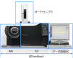

2024年
問題80 ホルムアルデヒド測定法に関する組合せとして，最も不適当なものは次のうちどれか．
（1）アクティブ法 DNPH カートリッジ捕集−HPLC 法
（2）アクティブ法 検知管法
（3）アクティブ法 燃料電池法
（4）パッシブ法 DNPH 含浸チューブ−HPLC 法
（5）パッシブ法 定電位電解法
2024年
問題80 正解（5） 頻出度AAA
「定電位電解法」はサンプリングにポンプを使う「アクティブ法」である．
ホルムアルデヒドの測定法は2024-80-1表並びに下記参照．
2024-80-1表 ホルムアルデヒド測定法
| 種別 | 測定法名称 | |
| 精密測定法 | アクティブ法 | DNPHカートリッジ捕集−HPLC※法
ほう酸溶液捕集−AHMT※吸光光度法 TFBA※カートリッジ捕集−GC/MS※法 CNETカートリッジ捕集−HPLC法 |
| パッシブ法 | DNPH含浸チューブ−HPLC法
TEA含浸チューブ−吸光光度法 |
|
| 簡易測定法 | アクティブ法 | 検知管法（電動ポンプ式）
定電位電解法（DNPH干渉フィルタ法） 光電光度法（試験紙） 電気化学的燃料電池法 光電光度法（AHMT試験紙） 化学発光法 吸光光度法（拡散スクラバー法） |
| パッシブ法 | 検知紙法（バイオセンサ法） | |
※ HPLC：高速液体クロマトグラフ
※ GC/MS：ガスクロマトグラフィー質量分析
※ AHMT，TFBAなども試薬の名称である．
1．サンプリングの方法には精密測定法，現場で用いる簡易測定法に，それぞれ吸引ポンプを使うアクティブ法と分子の拡散原理によるパッシブ法がある．
2．DNPHカートリッジ捕集・溶媒描出-高速液体クロマトグラフ(HPLC)法ではオゾンによって負の妨害を受けるので，オゾンの存在が予想される場合は，オゾン除去管（粒状よう化カリウム充填管）を用いる．
検知管法では，ホルムアルデヒドと共存するアセトアルデヒド及び酸性物質は正の影響，アルカリ性物質は負の影響を与える．
ほう酸溶液捕集-AHMT吸光光度法（AHMT法），光電光度法は妨害ガスの影響をほとんど受けない．
3．試薬のDNPHカートリッジは冷蔵保存する必要があるが，TFBAカートリッジはその必要がない．
4．ガスクロマトグラフィー質量分析計（GC/MS）は，ガスクロマトグラフィー（GC）と質量分析計（マススペクトロメータ，MS）を接続させた装置である（2024-80-1図）．

出典 株式会社 島津製作所
https://www.an.shimadzu.co.jp/gcms/support/faq/fundamentals/gcms.htm
ガスクロマトグラフィーは気体（ガス）状の物質を分離・精製する装置で，物質によって単離される時間が異なる．単離された物質を質量分析計でイオン化し，磁場中に飛ばして軌道の違いからその質量を質量スペクトルとして得る．その結果を示したグラフをクロマトグラムという（2024-80-2図）．
出典 公益財団法人 日本建築衛生管理教育センター
新建築物の環境衛生管理 H31.3.31第1版第1刷 中273 図5-3-3(4)を基に作成
ガスクロマトグラフィー質量分析計を用いてクロマトグラムを得る分析方法をガスクロマトグラフ法という．